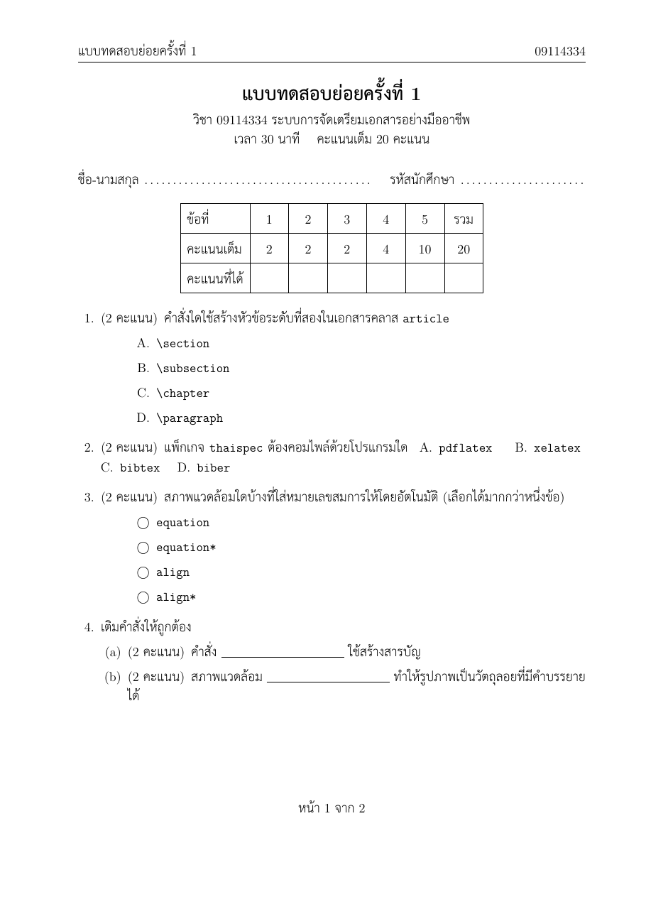
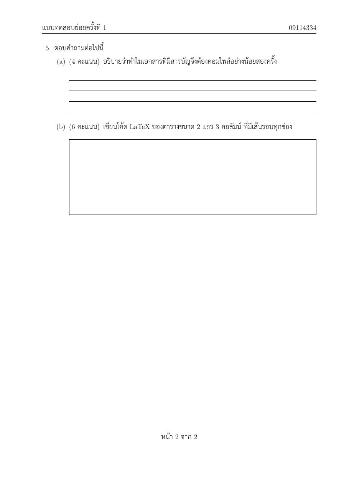

วัตถุประสงค์
Workshop นี้เป็นงานเสริม ไม่มีสไลด์บทเรียนประกอบ คำสั่งใหม่ทุกคำสั่งอธิบายไว้ใน Part A เมื่อจบแล้ว นักศึกษาจะสามารถ
- เขียนข้อสอบด้วยคลาส
examโดยใช้questions,\questionและpartsพร้อมกำหนดคะแนนแต่ละข้อได้ - สร้างข้อสอบปรนัยด้วย
choices,oneparchoicesและcheckboxesและข้อเติมคำด้วย\fillinได้ - เว้นที่สำหรับเขียนตอบด้วยเส้นบรรทัดหรือกรอบได้
- เขียนเฉลยไว้ในไฟล์เดียวกับข้อสอบ และพิมพ์ฉบับนักศึกษาหรือฉบับเฉลยด้วยตัวเลือก
answersได้ - ทำหัวกระดาษ ท้ายกระดาษ และตารางคะแนนที่รวมคะแนนให้อัตโนมัติ เป็นภาษาไทยได้
ไฟล์ที่ได้รับ
ดาวน์โหลด exam_paper.zip แล้วแตกไฟล์ไว้ในที่ที่หาง่าย จะได้โฟลเดอร์ exam_paper ดังนี้
exam_paper/
├── doc.pdf ชิ้นงานต้นแบบ ฉบับนักศึกษา (2 หน้า)
├── warmup.tex ไฟล์สั้น ๆ สำหรับ Part A
├── main.tex ไฟล์เริ่มต้นสำหรับ Part B
├── content.txt เนื้อหาทั้งหมดของ Part B ไม่ต้องพิมพ์ใหม่
└── Laksaman.fontspec ไฟล์ฟอนต์ไทยแบบเดียวกับ thai_macros (ห้ามลบ)ดูไฟล์แยกทีละไฟล์ได้ที่
warmup.tex,
main.tex,
content.txt,
Laksaman.fontspec
เตรียมเครื่อง
ประมาณ 5 นาทีเปิดโฟลเดอร์ exam_paper ใน Sublime Text และเปิดเทอร์มินัลในโฟลเดอร์เดียวกัน
คลาส exam มากับ TeX Live และ MiKTeX อยู่แล้ว ข้อสอบเป็นภาษาไทยจึงใช้ thaispec กับฟอนต์ Laksaman และคอมไพล์ด้วย XeLaTeX เหมือน Workshop เอกสารภาษาไทยและคำสั่งที่สร้างเอง
$ latexmk -xelatex warmup.texxelatex ครั้งเดียวค่าเหล่านี้อาจผิดหรือเป็นเครื่องหมายคำถาม latexmk คอมไพล์ซ้ำจนค่าถูกต้องให้เอง
อุ่นเครื่อง
ประมาณ 45 นาทีใช้ไฟล์ warmup.tex (แบบทดสอบภูมิศาสตร์ 2 ข้อ) ทำทีละข้อ แล้วสั่ง latexmk -xelatex warmup.tex ทุกครั้งที่แก้
- A0 คอมไพล์
warmup.texตามที่ได้รับ แล้วเปิด PDF ดูโครงสร้างในไฟล์\begin{questions} \question[2] กรุงเทพมหานครตั้งอยู่ริมแม่น้ำสายใด ... \end{questions}เลขข้อและคะแนนมาจากส่วนใดของโค้ด และคะแนนพิมพ์เป็นภาษาอะไร
- A1 คะแนนภาษาไทยและคะแนนรวม เพิ่ม
\pointpoints{คะแนน}{คะแนน}ในส่วนนำ (คำแรกใช้กับ 1 คะแนน คำที่สองใช้กับหลายคะแนน) แล้วเพิ่มบรรทัดคะแนนเต็ม \numpoints\ คะแนนใต้ชื่อแบบทดสอบ คอมไพล์ จากนั้นเปลี่ยนบรรทัดแรกเป็น\documentclass[12pt,addpoints]{exam}ก่อนใส่
addpointsคะแนนเต็มเป็นเท่าใด และหลังใส่เป็นเท่าใด - A2 ปรนัย ใส่ตัวเลือกให้ข้อ 1 โดยวางต่อจากคำถาม
จากนั้นลองเปลี่ยน\begin{choices} \choice แม่น้ำท่าจีน \CorrectChoice แม่น้ำเจ้าพระยา \choice แม่น้ำแม่กลอง \choice แม่น้ำป่าสัก \end{choices}choicesเป็นoneparchoicesและcheckboxesทั้งสามแบบจัดตัวเลือกต่างกันอย่างไร ตอนนี้
\CorrectChoiceแสดงผลต่างจาก\choiceหรือไม่ - A3 ข้อย่อยและเติมคำ แบ่งข้อ 2 เป็นข้อย่อย แต่ละข้อย่อยมีคะแนนของตัวเอง และลบ
[3]หลัง\questionของข้อ 2 ออก\begin{parts} \part[1] จังหวัดทางทิศเหนือ \fillin[ปทุมธานี][3cm] \part[1] จังหวัดทางทิศตะวันออก \fillin[ฉะเชิงเทรา][3cm] \part[1] จังหวัดทางทิศใต้ \fillin[สมุทรปราการ][3cm] \end{parts}คะแนนเต็มยังเป็นเท่าเดิมหรือไม่ และข้อความในวงเล็บเหลี่ยมแรกของ
\fillinหายไปไหน - A4 ที่สำหรับเขียนตอบ เพิ่มข้อ 3 ที่มี 4 คะแนน ถามว่า
อธิบายว่าทำไมกรุงเทพมหานครจึงน้ำท่วมง่ายแล้วลองเว้นที่ตอบสามแบบทีละแบบ ได้แก่\vspace{3cm},\fillwithlines{3cm}และ\makeemptybox{3cm}แบบใดเหมาะกับคำตอบที่เป็นข้อความ และแบบใดเหมาะกับการวาดรูปหรือแสดงวิธีทำ
- A5 เฉลยในไฟล์เดียวกัน ในข้อ 3 แทนคำสั่งเว้นที่ด้วย
คอมไพล์ แล้วเพิ่มตัวเลือก\begin{solutionorlines}[3cm] พื้นที่ต่ำ อยู่ใกล้ปากแม่น้ำ และแผ่นดินทรุดตัวทุกปี \end{solutionorlines}answersเป็น\documentclass[12pt,addpoints,answers]{exam}และคอมไพล์อีกครั้ง เพิ่ม\renewcommand{\solutiontitle}{\noindent\textbf{เฉลย}\enspace}ในส่วนนำเพื่อเปลี่ยนคำว่า Solutionฉบับที่มีและไม่มี
ลบanswersต่างกันที่ใดบ้าง (ดูข้อ 1, 2 และ 3) ทำไมการเก็บเฉลยไว้ในไฟล์เดียวกับข้อสอบจึงสะดวกanswersออกก่อนทำข้อต่อไป - A6 หัวและท้ายกระดาษ เพิ่มในส่วนนำ
\pagestyle{headandfoot} \header{แบบทดสอบภูมิศาสตร์}{}{ชั้นปีที่ 1} \headrule \footer{}{หน้า \thepage\ จาก \numpages}{}วงเล็บปีกกาสามคู่ของ
\headerและ\footerหมายถึงตำแหน่งใด - A7 ตารางคะแนน เพิ่มก่อน
\begin{questions}
แล้วเปลี่ยนคำในตารางเป็นภาษาไทยด้วย\begin{center} \gradetable[h][questions] \end{center}\hqword{ข้อที่},\hpword{คะแนนเต็ม},\hsword{คะแนนที่ได้}และ\htword{รวม}ในส่วนนำถ้าเปลี่ยน
[h]เป็น[v]ตารางเปลี่ยนอย่างไร และคำในตารางยังเป็นภาษาไทยหรือไม่ (ตารางแนวตั้งใช้\vqword,\vpword,\vswordและ\vtword) คะแนนข้อ 2 ในตารางคิดจากอะไร - A8 ทำให้ผิดโดยตั้งใจ ทำทีละข้อในไฟล์
warmup.texฉบับเดิม (ก่อนแก้ A2) แล้วแก้กลับ- เขียน
\choice แม่น้ำเจ้าพระยาต่อจากคำถามข้อ 1 โดยไม่มีchoicesครอบ! Undefined control sequence. l.18 \choice - ลบ
\begin{questions}และ\end{questions}! Undefined control sequence. l.15 \question [2] - เขียน
\part[1] จังหวัดทางทิศเหนือต่อจากคำถามข้อ 2 โดยไม่มีpartsครอบ
ข้อ c มีข้อความผิดพลาดหรือไม่ และ PDF แสดงอะไร (คำสั่ง
\partนอกpartsคือคำสั่งแบ่งภาคของ LaTeX ทั่วไป) - เขียน
addpoints และ answers ทำอะไร (2) \choice, \question และ \part ต้องอยู่ในสภาพแวดล้อมใด
และ (3) จะพิมพ์ข้อสอบฉบับนักศึกษาและฉบับเฉลยจากไฟล์เดียวกันได้อย่างไร
งานหลัก
ประมาณ 45 นาทีเปิด main.tex และคัดลอกเนื้อหาจาก content.txt มาวาง เพื่อสร้างแบบทดสอบ 20 คะแนนให้เหมือน doc.pdf มากที่สุด
ต้นแบบเป็นฉบับนักศึกษา แต่ไฟล์ของนักศึกษาต้องมีเฉลยครบทุกข้อด้วย
$ latexmk -xelatex main.tex

คำแนะนำ
| ส่วนของชิ้นงาน | สิ่งที่ต้องใช้ |
|---|---|
| คะแนนรวมอัตโนมัติ | ตัวเลือก addpoints, \numpoints |
| หัวและท้ายกระดาษ | \pagestyle{headandfoot}, \header, \headrule, \footer, \numpages |
| คำภาษาไทย | \pointpoints, \hqword, \hpword, \hsword, \htword, \solutiontitle |
| บรรทัดชื่อ | \makebox[ความกว้าง]{\dotfill} และ \hfill (ชื่อกว้าง 0.45\textwidth รหัสกว้าง 0.25\textwidth) |
| ตารางคะแนน | \gradetable[h][questions] |
| ข้อ 1–3 | choices, oneparchoices, checkboxes, \CorrectChoice |
| ข้อ 4 | parts, \fillin[คำตอบ][4cm] |
| ข้อ 5 | \newpage, solutionorlines, solutionorbox และ verbatim สำหรับเฉลยที่เป็นโค้ด |
คำใบ้เพิ่มเติม (เปิดดูเมื่อติด)
- ชื่อคำสั่งในตัวเลือกพิมพ์ด้วย
\verb|\section|และในเฉลยของ\fillinใช้\texttt{\textbackslash tableofcontents} - ข้อที่มีข้อย่อยไม่ต้องใส่คะแนนหลัง
\questionคะแนนของข้อคือผลรวมของข้อย่อย solutionorboxรับความสูงของกรอบในวงเล็บเหลี่ยมเหมือนsolutionorlines- ตรวจเฉลยโดยใส่
answersชั่วคราว แล้วเอาออกก่อนส่ง
ส่งงาน
เปลี่ยนชื่อไฟล์เป็น exam_paper_<รหัสนักศึกษา>.tex แล้วสั่ง latexmk -xelatex exam_paper_<รหัสนักศึกษา>.tex ส่งไฟล์ .tex และ .pdf ฉบับนักศึกษา (ไม่มี answers)
รายการตรวจสอบก่อนส่ง
ท้าทาย
ไม่บังคับ · ประมาณ 20–30 นาทีทำเพิ่มในไฟล์ใหม่ ข้อใดก็ได้
- C1 แบ่งข้อสอบเป็นสองตอน เขียน
ตอนที่ 1 ปรนัยเป็นข้อความตัวหนาก่อน\begin{questions}และเพิ่ม\fullwidth{\textbf{ตอนที่ 2 อัตนัย}}ก่อนข้อ 4ถ้าใช้
\fullwidthก่อนข้อ 1 เกิดอะไรขึ้น - C2 ใช้
\bonusquestion[2]เพิ่มข้อคะแนนพิเศษ แล้วดูว่าคะแนนพิเศษนับรวมใน\numpointsหรือไม่ (ลองใช้\numbonuspoints) - C3 เปลี่ยนป้ายข้อเป็น
ข้อที่ 1.ด้วย\renewcommand{\questionlabel}{\textbf{ข้อที่ \thequestion.}} - C4 ทำหน้าปกข้อสอบที่มีโลโก้ คำชี้แจง และตารางคะแนนแนวตั้ง
\gradetable[v][questions]ภายในสภาพแวดล้อมcoverpages(คำในตารางแนวตั้งเปลี่ยนด้วย\vqwordและคำสั่งชุดเดียวกัน)เลขหน้าของหน้าปกนับรวมใน
\numpagesหรือไม่
ข้อผิดพลาดที่พบบ่อย
| อาการ | สาเหตุและวิธีแก้ |
|---|---|
! Undefined control sequence. ที่ \choice |
\choice อยู่นอก choices, oneparchoices หรือ checkboxes |
! Undefined control sequence. ที่ \question |
ลืม \begin{questions} หรือ \question อยู่หลัง \end{questions} |
| มีหัวข้อ Part I ขึ้นมาเอง | \part อยู่นอก parts จึงกลายเป็นคำสั่งแบ่งภาคของ LaTeX |
| คะแนนเต็มเป็น 0 | ลืมตัวเลือก addpoints |
คะแนนรวม จำนวนหน้า หรือตารางคะแนนผิด หรือเป็น ?? |
คอมไพล์ครั้งเดียว ใช้ latexmk -xelatex |
| เฉลยหลุดไปในฉบับนักศึกษา | ยังมีตัวเลือก answers หรือคำสั่ง \printanswers อยู่ |
| ฉบับเฉลยไม่มีคำตอบของบางข้อ | ใช้ \fillwithlines หรือ \makeemptybox ซึ่งไม่มีเฉลย ให้ใช้ solutionorlines หรือ solutionorbox |
แหล่งอ้างอิง
- คู่มือคลาส exam ในเครื่อง สั่ง
texdoc examในเทอร์มินัล (หัวข้อ Questions, Choices, Points, Solutions, Grading tables, Headers and footers) - สไลด์บทเรียน Thai, Macros and Large Documents สำหรับ
thaispec - ข้อสอบกลางภาคและปลายภาคของวิชานี้ที่ผู้สอนแจก เป็นตัวอย่างข้อสอบจริงที่ทำด้วยคลาส exam